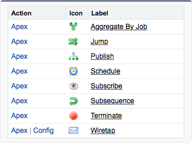
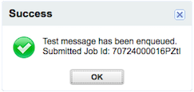
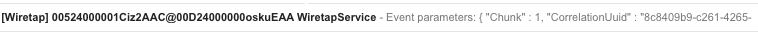

This tutorial demonstrates the invocation of business logic in a service. It makes use of the support infrastructure afforded by the Services Package. In this demonstration, we will enqueue an event to the Wiretap service. This will in turn forward the contents of the event to our email inbox.
Expected Duration: 5 minutes.
Navigate to the Services tab. If you are presented with the splash page, simply click the Continue button towards the bottom right of the page.
At the bottom of the services list, locate and click on the Wiretap service.

You are now ready to test the service.
A dialogue will appear to indicate test event has been enqueued to the Wiretap service.

Check your email inbox and wait for the receipt of an email from the Services Package.

This email contains details of applicable to the context of the Enqueue Test Event button press action. Some of the context attributes are configurable (such as the recipient of the email) while other attributes are determined by the container (such as the identity of the user generating the enqueue event)